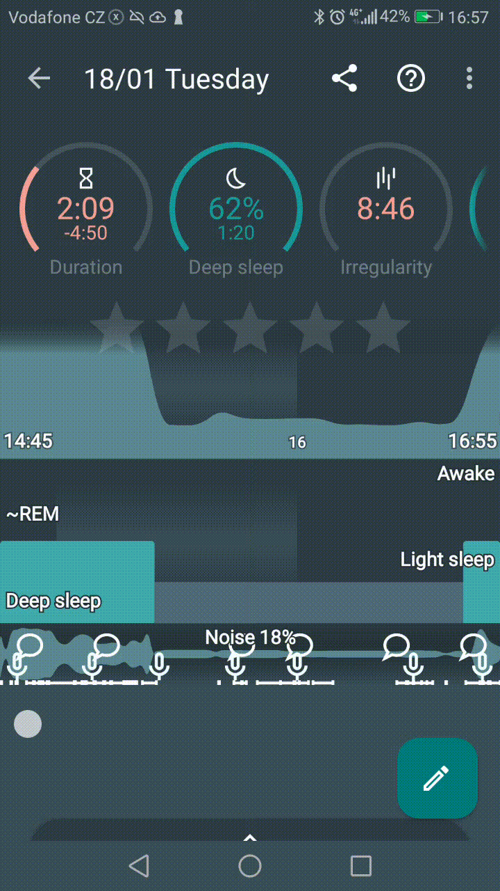

Sleep noise analysis#
Sleep as Android can record significant sounds during your night, analyze ambient noise levels, and automatically classify events like snoring, talking, coughing, laughing, or a baby crying.
When enabled, Sleep Noise Analysis:
- Monitors noise levels throughout the night and generates a Noise Graph.
- Triggers recordings whenever a distinct sound (snore, speech, cough) occurs or when noise exceeds your chosen volume threshold.
- Categorizes recordings automatically with tags like
#snore,#talk,#laugh,#babyor#cough.
💡 Quick Tip: Place your phone close to you with the microphone clear and uncovered.
Recording in progress on the tracking screen

Key Settings Explained#
Navigate to Settings️ → Sleep noise analysis to customize your experience:
| Setting | What it Does | Recommended Setup |
|---|---|---|
| Sound recognition | Analyzes audio to identify snoring, talking, coughing, laughing, or baby crying. | ON for detailed breakdown. |
| Anti-snoring | Plays subtle cues (vibration or soft sound) to prompt you to change sleeping position when snoring is detected. | ON if you want to curb snoring. |
| Record sleep noises | Automatically saves audio snippets when noise triggers are met. | ON to save clips. |
| Recording volume threshold | Sets the minimum volume needed to trigger a recording. | 15% – 25% (Default is 15%). |
| Best of sleep album | Saves a copy of the favourite sound recordings (marked with a star) itno the local media storage | ON if you like to have alternative access to the saved sounds. |
| Noise statistics | Displays average noise levels under your daily sleep records. | Enabled automatically with noise recording. |
| Automatic delete | Clears unstarred audio clips automatically after 7 days to free up space. | ON (Recommended). |
| Storage path | Folder on your device where audio clips are saved. | Default app storage. |
| Output format | Switch between .m4a and .ogg audio formats. |
Default (.m4a). |
| Input format | Switches between different options for the system sound recorder types (for debugging purposes only). | Default (Recommended). |
Understanding the Volume Threshold#
The Recording volume threshold controls how sensitive the recorder is:
- 10% and less (Very Sensitive): Records almost everything, including quiet room hums, fans, or distant street noise.
- 15% – 25% (Optimal Balance): Ideal for most bedrooms. Ignores faint background noise but catches snoring, sleep talking, and coughing.
- 40% or more (Low Sensitivity): Only records very loud noises. Works best in bedrooms with high background noise level.
How to Play Your Recordings#
You can listen to your saved sleep noises in three simple ways:
-
From the Main Screen (Noise Card):
- On your main screen, look for the Noise Card.
- Tap the card to quickly replay highlights from the night (a selection of the most interesting sounds)
-
From the Main Menu (Noise Library):
- Open the
Left ☰ Menu→Noise. - Browse or filter clips by tags (e.g.,
#snoreor#talk).
- Open the
-
Directly from Your Sleep Graph:
- Look for the Microphone
 icon on your sleep graph timeline.
icon on your sleep graph timeline. - Tap and drag to select a highlighted period on the graph around this icon.
- Tap the Play icon in the top right corner to listen to what happened at that exact minute.
- Look for the Microphone

❓ FAQs & Troubleshooting#
No recordings appear in the morning
- Reason A: Threshold is set too high. The app only records sounds louder than your threshold.
- 👉 Fix: Go to
Settings→Sleep noise analysis→Recording volume thresholdand slide it down a little.
- 👉 Fix: Go to
- Reason B: Microphone conflict with another app. On Android, only one app can access the microphone at a time. If another app running in the background (such as a voice assistant, white noise generator, or audio analyzer) is actively using the mic, Sleep as Android will be blocked from recording.
- 👉 Fix: Close other audio-recording or voice-activated apps before going to sleep, or check active mic permissions under your phone’s
System settings→Security & Privacy→Permission Manager→ `Microphone.
- 👉 Fix: Close other audio-recording or voice-activated apps before going to sleep, or check active mic permissions under your phone’s
- Reason C: Storage path issue. The app couldn’t save the audio files.
- 👉 Fix: Go to
Settings→Sleep noise analysis→Storage pathand tapReset.
- 👉 Fix: Go to
- Reason D: System microphone permissions blocked.
- 👉 Fix: Check your phone’s system settings to ensure Sleep as Android has microphone permissions enabled. If your Noise Graph
Noise recording fails when tracking starts automatically (Android 11+)
- Reason: Starting with Android 11, the system restricts apps running in the background from accessing the microphone. If sleep tracking is launched automatically, Android prevents the app from capturing audio in the background.
- 👉 Fix: Grant the Draw over other apps (Display over other apps) permission to Sleep as Android when prompted. This permits the app to launch a temporary transparent overlay screen when auto-tracking starts, allowing microphone access to function normally.
- Technical details: For more context on this Android platform change, check the Android Issue Tracker.
Too many short or constant recordings (e.g., fan or background noise)
- Reason: The threshold is too low, or background noise (TV, music, fan) keeps triggering the recorder.
- 👉 Fix: Increase the threshold to 25%–35% under
Settings→Sleep noise analysis→Recording volume threshold.
A sound was tagged incorrectly (e.g., fan tagged as snore)
- Sound classification is AI-assisted and continuously improving.
- 👉 Fix: You can manually edit or remove tags in the player screen. When prompted, you can choose to share misclassified clips with the support team (
support@urbandroid.org) to help improve future accuracy.
How do I record dream journals or morning thoughts?
- Rather than relying on automatic noise triggers, use the Note Taking / Dictation feature on the active tracking screen:
- Pull up the tracking menu during or right after sleep tracking.
- Tap the Pencil Tags icon in the bottom left corner, then tap the
Microphone icon.
- Dictate your dream summary, speech recognition will transcribe it directly into your sleep notes!
Weird chirping or sonar noise in recordings
- If you use Sonar tracking, speaker-to-mic feedback or audio enhancement filters on your phone can create high-pitched artifacts.
- 👉 Fixes:
- Turn off all system-level audio enhancement features. Check both Sound and Accessibility in your phone settings to disable features like Adaptive Sound, Dolby, Equalizers, or custom Sound Profiles.
- Set Input to
UNPROCESSEDinSettings→Sleep noise analysis→Input. - Position your phone so the bottom speaker/mic area extends slightly off the edge of your nightstand/table (not touching the surface)
Need further help? Contact us via Left ☰ Menu → Support → Report a bug.